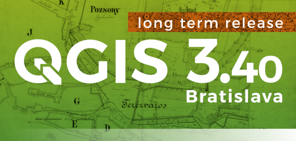
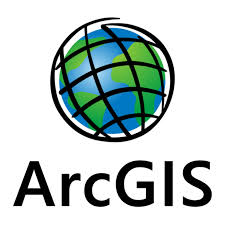
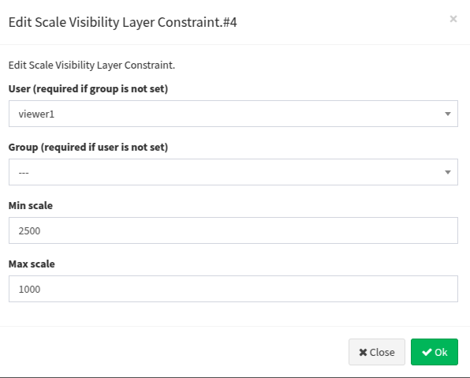
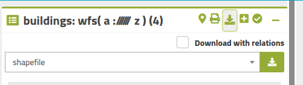
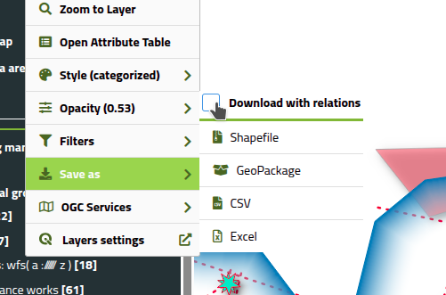
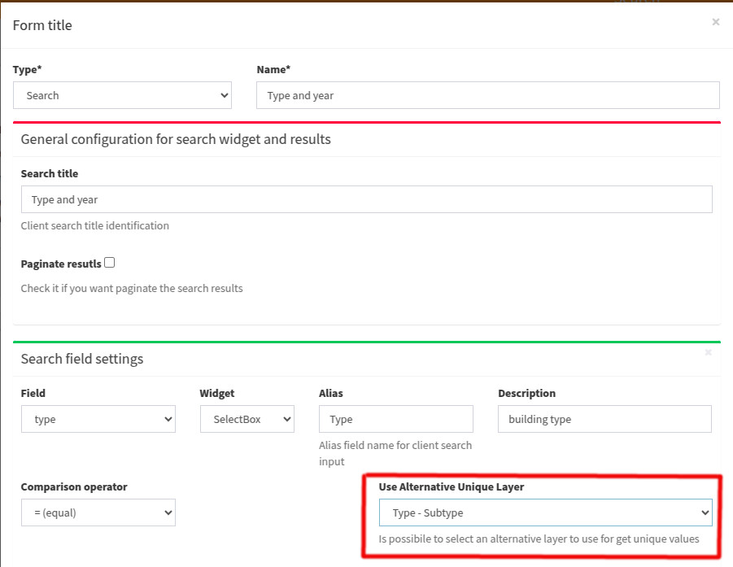

Changelog G3W-Suite 3.10
Release date: 30 July 2025
Changelog for G3W-SUITE 3.10
Version 3.10 of G3W-SUITE is characterized by a great refactoring job.
Among the main innovations we also remember:
- QGIS 3.40 LTR compatibility
- Elasticsearch integration
- Redlining Notes
- Data Plotly (QGIS plugin) charts management improvements
- and much more.
We hope you enjoy this great work!
Happy mapping with G3W-SUITE!
Sponsor and funder
Open source project · Gis3W main sponsor.
Among the main funder of this version we remember:
General
Feature: QGIS 3.40 LTR compatibility
G3W-SUITE 3.10 is compatible with the new 3.40 LTR of QGIS
Take advantage of all the news related to the preparation of QGIS projects with the new LTR version

Feature: ArcGisFeatureServer support
ArcGisFeatureServer data type is now supported

Administration
Feature: Customizable visibility scale of individual layers per single/group user
On the Admin side, it is possible to define, for each layer of a WebGis service, a visibility scale differentiated by user and/or user groups.
Activating this option will overwrite, for the layers involved, any display scales defined at QGIS project level

Feature: Customize search/query results preview
On the Admin side, it is possible to define, for each project layer, the number of fields shown in the preview of the results of a search and query.
HTML formatting and image previews are now managed in the preview fields
Cartographic client and interaction with the map
Feature: Redlining notes (annotations)
A new MapControl will allow the user to add annotations or drawings to the map:
- texts
- point elements
- open and close linear elements
- circle/polygonal elements
For each of them it will be possible to define size, color, transparency, labeling and more
The elements drawn on the map will be shareable together with the other settings of the WebGis service and reported in the print output
Feature: Map sharing
This tool allows you to share the WebGis service while maintaining the customizations defined by the user, including, if present, the annotations created:
- map extension
- layers on/off
- styles associated with the layers
- annotations
Feature: Recallable Messages/Info
The Messages associated with the individual WebGis services and displayed when the services are started can be recalled by the user at any time.
The message will be displayed on a resizable modal and can be consulted in overlay while continuing to interact with the various elements of the cartographic client.
Feature: Fields number preview and HTML support
It is now possible to configure the number of fields displayed in the preview of the results of a query or search.
The preview now also manages HTML content
Feature: Exporting 1:N related data associated with the parent layer
Export of 1:N related tables is available for both the complete parent layer and a selection of its features


Editing on line
Feature: Rotate features
The feature rotation function has been added to the editing tools.
The rotation of point geometries is linked to the presence of a field called “rotation” in the attribute table, on which the direction of the symbology associated with the point is based
Feature: Improve editing tool related to 1:N relations
If a layer being edited is the parent of one or more 1:N relations, it will be possible to select multiple parents and:
- add one or more records to the child table (only if alphanumeric) associating them with all the selected parents
- modify one or more fields of all the records of the child table, connected to the selected father geometries
Feature: Editing form based on a specific style associated with the layer
Inherited from QGIS project!
On the Admin side, by activating the editing function on a layer, it is possible to define which default style to use when editing attributes.
The tool is useful if you want to differentiate the display mode of the attributes during the consultation phase from that during the editing phase.
Searches
Feature: Elastic Search
A new search tool based on Elasticsearch technology has been added.
This tool allows you to perform comprehensive searches based on a subset of the project layers, simplifying the use by the user.
Feature: Adding the IN (within) operator
On the Admin side, when setting up a default search, it is possible to use the IN comparison operator, simplifying the case of searches based on the logical OR operator.
The new feature works wiht or without pagination system in the results
Feature: Increased speed in preparing search form content
The default searches based on SelectBox widget (values shown via drop-down menus) have loading times for the values to be displayed that are proportional to the number of records and unique values.
The times for preparing the form contents further increase when the search is based on multiple fields in the case that they are also associated with the SelectBox widget.
On the Admin side, it is now possible to associate a table/view of the QGIS project to each search field that directly reports only the unique values ??present in it.
This possibility greatly speeds up the loading times of the contents of the user-side search form, increasing the usability of the tool.

Charts
G3W-SUITE allows you to associate interactive graphics created on QGIS with the DataPlotly plugin to various WebGis services.
Feature: Charts order
On the Admin side it is possible to define the display order of the graphs, associated with the WebGis service, within the Charts panel of the cartographic client
Feature: Charts visibility
Graphs based on child layers/tables of a 1:N relations are visible both in the main graphs menu and associated with the attributes of a feature of the parent layer (for the relations-limited records) .
It is now possible to define whether these graphs should be displayed
- only on the main chart panel
- only associated with parent attributes
- in both positions (default)
Minor improvements
Feature: Permanently delete with one step
Feature: Add support legend parameters
Feature: Setting client session metadata visibility
Feature: Portuguese and Ukrainian translation
For the full detail see the official manual on ReadTheDocs.